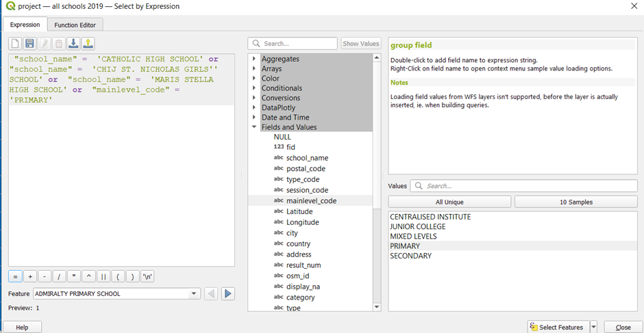
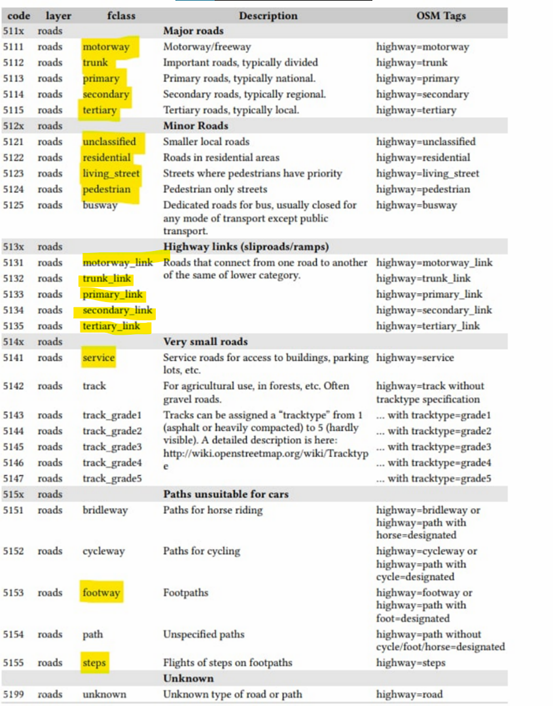
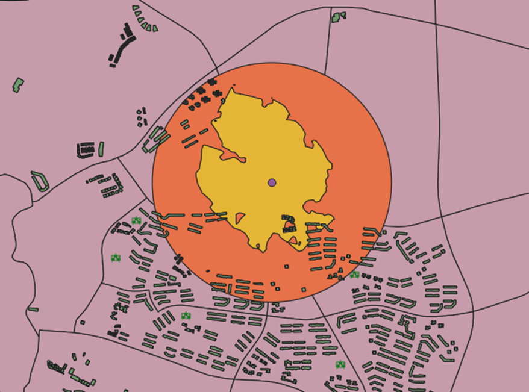

Methodology
The methodology used:
We would like to show the changes in the mergers of the schools (Primary School, Secondary School, JCs) overtime from 2018, 2019 and 2024.
Before we proceed with the data collection stage, we read through articles to understand the mergers of the schools during these few years. All the articles that we have referred to are stated in the Overview page.
CSV Files required:
Year 2018 (compilation of schools that haven’t merge)
Year 2019 merged schools
Year 2024 (schools to be merged in 2022, 2023, 2024)
Year 2018 (Before merger)
As we do not have the education institutions dataset for Year 2018, we used the dataset of Year 2021 from data.gov.sg (School Directory and Information) and input the list of schools that have been merged in 2019 (eg. “Jurong JC”, “Pioneer JC”) to form a completed version of dataset and delete the merged school name (eg. “Jurong Pioneer JC”) before we proceed on with Geocoding.
Year 2019 All Schools (After merger)
We have also created a list of excel displaying schools that have been merged in 2019 for comparison with schools that have merged and before merged as well as future mergers.
Year 2024
For the future mergers (Year 2022 to Year 2024 excluding Year 2020 and Year 2021), we stick to using one dataset that is the Year 2021 (School Directory and Information) from data.gov.sg as we noticed that there are no mergers taking place in Year 2020 and Year 2021. For years that have new mergers, we will add in schools names to give a complete set of data in the combined excel sheeast.
We decided to ignore schools that have been closed down. We will assume that there are no other factors affecting the number of schools other than mergers.
We also assumed that schools that exist in 2021 dataset already existed in 2019
We have also checked through all the addresses and input correct Latlong details information inside the CSV file so that all the schools can be found in the OSM without having the possibility that schools are omitted during the Geocoding process.
Data Extraction
Firstly, we need to download the data needed and import them into QGIS.
From data.gov.sg, download these files:
Master Plan 2019 Subzone Boundary (No Sea)
School Directory and Information
From Geofabrik, download the latest OSM zip file.
Extracting the SG boundary
Open a new project in QGIS and change the CRS of the project to EPSG 3414. Click on control+s and save the QGS file as 'project'.
From the browse panel, double click on the MP19 subzone boundary to add it into QGIS. Your map should look like Figure 1.

Figure 1
We will now remove the islands that are not needed and retain the main island map only. Click on the subzone layer to make it active, and click on the select features icon. Select the islands that we will not be using in this project, as seen in Figure 2.

Figure 2
Click on the inverse selection button to select the main map instead. Your screen should look like Figure 3.
Figure 3
Right click on this layer and export the selected features as a geopackage. Name the geopackage as 'project' and name this layer as 'mpsz'. Make sure to set the CRS as EPSG3414 and to tick the checkbox to 'save selected features only'.
Remove the MP19 subzone layer from QGIS after the geopackage layer has been created.
Extracting all schools from the 2019 merger onwards
In the School Directory and Information zip file, open the csv file titled 'general-information-of-schools'.
Add 2 new columns titled 'City' and 'Country', and fill in 'Singapore' for the entire column. Delete any unnecessary columns as well. You should be left with these columns only:
School_name Address Postal_code Mainlevel_code City Country
Your file should look like Figure 4.
Save this as a new csv file, titled 'schools'
In QGIS, from the menu bar, click on MMQGIS > geocode > geocode csv with web service
When the geocode csv with web servicewindow appears, click on the 3 dots and select the schools csv. Select theaddress to be the 'address' column, city to be the 'city' column, and the country to be the 'country' column. Select 'OpenStreetMap/Nominatim' as the Web Service.
For the output file name, click on the 3 dots and create a new folder in your file explorer. Name this folder 'geocoding'. Type the file name as 'geocoded_education1'.
For the not found output list, click on the 3 dots and select the geocoding folder that you have previously created. Typethe file name as 'not_found_education1'
Your panel should look like Figure 5. Click on apply and wait for it to run.
After the process has finished running, a temporary layer should appear in the main screen. Rename this temporary layer to 'schools'. Your screen should look like Figure 6.
Open the non_found_education1 csv file. Using https://stevemorse.org/jcal/latlon.php, get the latitude and longitudes of the school locations by inputting the relevant information into the website.
You should get a csv file similar to the one in Figure 7.
To import the schools in the not_found_education1 dataset into QGIS,add the csv file as a delimited text layer. From the menu bar, click on Layers > Add layers > Add delimited text layer
Select Longitude as the X field and Latitude as the Y field. Select EPSG4326 as the Geometry CRS as well. Your window should look similar to Figure 8. Click on add.
To merge all schools together into one layer, we first have to rename the columns, since the column names do not match for both layers. We can check this by opening the attribute table for both layers. This comparison can be seen in Figure 9.
From Figure 6, we have to change these column names from the geocoded_schools1 layer.
- School_nam to school_name
- Postal_cod to postal_code
- Session_co to session_code
- Mainlevel_ to mainlevel_code
From the menu bar, click on Geoprocessing > Toolbox > Rename fields.
For the input layer, select geocoded_education1. Select school_nam as the 'Field to rename'. Input 'school_name' as the New field name. Check the open output file after running algorithm checkbox. Your window should look similar to Figure 10. Click on run.
A temporary layer called 'Renamed' should be added. Save this layer as a geopackage file and name it 'geocoded_schools1`. When prompted to, click on Overwrite layer.
Repeat the process for the other columns that have to be renamed.
To merge both layers, from the main panel, click on Vector > Data management tools > Merge vector layers. For the input layers, select 'not_found_education1' and 'geocoded_education1', as shown in Figure 11
Click on ok, then run the process. A new temporary layer should be added into your QGIS. Right click on this layer to open the attribute table. Click on the pencil icon to organize the table columns. Uncheck the columns that are not necessary, as shown in Figure 12.
Save this merged layer as a geopackage, name it 'all schools 2021'. Make sure that the CRS is set to EPSG3414.
Right click on the 'all schools 2021' layer and open the attribute table. Click on the select features by expression icon  . Select the locations of schools that will be merged in 2022 (only select those whose locations will not be used after the merger). An example of the code that should be used is shown in Figure 13.
. Select the locations of schools that will be merged in 2022 (only select those whose locations will not be used after the merger). An example of the code that should be used is shown in Figure 13.
The list of schools that will be merged in the following years can be found here. https://www.moe.gov.sg/-/media/files/news/press/2021/annex-school-mergers.ashx?la=en&hash=F52BA582E438A9320B252F070762E621B059B854
Click on select features and close the pop up. The schools that have been selected should be shown in the attribute table as shown in Figure 14.
Click on the inverse selection icon. All schools except the one that will be merged are selected instead, as shown in Figure 15.
Close the attribute table. Right click on the all schools 2021 layer and save selected features only as a geopackage. Make sure that the CRS is set to EPSG3414 and that the 'save selected features only' checkbox is ticked. Name this layer 'all schools 2022'.
Using the same method, extract the schools that will remain after the mergers, in 2023 and 2024.
Extracting all schools from 2018
As the data that we have extracted thus far is only applicable to 2021 and later, we will have to extract the schools before the 2019 merger as well.
Using https://elite.com.sg/school-shift-2019 and google search, manually make a csv file with the schools that have merged in 2019, as shown in Figure 16. The addresses and the postal codes of each school can be sourced online.
Using similar methods as before, geocode this csv to import the dataset into QGIS. Save this layer as a geopackage, and name it 'geocoded sch'
As there are schools that cannot be found using geocoding as well, find the latitude and longitude of these schools using the same website (https://stevemorse.org/jcal/latlon.php) and add it into the not found schools csv file, as shown in Figure 17.
Add this csv file into QGIS by adding it as a delimited text layer, as done before while importing the not_found_schools1 dataset.
Similarly to the 2021 schools data extraction, the column names have to be renamed so as to perform a merge. After merging the 2 layers, unnecessary columns should be removed from the merged layer as well. After that, export this merged layer as a geopackage file, and name it 'education 2018'.
Right click on this new geopackage layer and open its attribute table. Click on the select features by expression icon and select the Junior Colleges using the code shown in Figure 18.

Using the tools, select the junior colleges that have already merged and deselect the others. When you open your attribute table, it should look like Figure 19.
Click on the inverse selection icon and save the selected features as geopackage. Make sure the CRS is set to EPSG3414 and that the 'save selected features only' checkbox is ticked. Name this layer 'no merged JCs'.
From the menu bar, click on Vector > Data management tools > Merge vector layers. Merge the 'no merged JCs' layer with the 'education 2018' layer. Right click on this layer to open the attribute table. Rename the FIDs such that there is no null value. Click on the edit button to save all changes, and close the attribute table.
Right click on this merged layer and export it as a geopackage. Make sure that the CRS is set to EPSG3414. Name this layer 'all schools 2018'
Extracting schools which locations are no longer in use
Next, we will be extracting the schools whose locations are no longer in use after the mergers.
Using the csv files that we manually made from https://elite.com.sg/school-shift-2019 and https://www.moe.gov.sg/-/media/files/news/press/2021/annex-school-mergers.ashx?la=en&hash=F52BA582E438A9320B252F070762E621B059B854, extract schools into separate layers:
- Primary schools whose locations are no longer in use after the 2019 merger
- Secondary schools whose locations are no longer in use after the 2019 merger
- Post-secondary schools whose locations are no longer in use after the 2019 merger
- Primary schools whose locations will no longer be in use after the 2022-2024 mergers
- Secondary schools whose locations will no longer be in use after the 2022-2024 mergers
We will first be extracting the primary schools whose locations are no longer in use after the 2019 merger.
This includes Balestier Hill Primary, Loyang Primary, MacPherson Primary, Coral Primary, East Coast Primary, Da Qiao Primary and East View Primary.
From 'all schools 2018' layer, right click to open the attribute table.
Click on the select features by expression icon. Select these schools whose locations will no longer be in use after the 2019 merger, using the code below in Figure 20
Click on select features. Close the attribute table. Right click on the 'all schools 2018' layer and export the selected features as a geopackage. Make sure the 'save selected features only' checkbox is ticked. Name this layer 'pri sch 2019 merged'
Repeat the steps in section 6.1.4 for the other layers that were identified.
Extracting road network layer.
Open the 'gis_osm_roads_free_1' layer from the OSM file downloaded from Geofabrik. We first need to extract the road network layer that falls within Singapore only. From the menu bar, click on Vector > Geoprocessing tools > Clip.
Select the input layer to be 'gis_osm_roads_free_1' , and the overlay layer to be the MP19 subzone boundary layer. Your screen should look like Figure 21.
Click on the screwdriver icon for both layers, and change the invalid feature filtering option to 'Do not filter (Better Performance), as shown in Figure 22
Go back to the parameters tab and click on run. After the process has finished running, a new layer, 'Clipped', should be added into your QGIS. The road networks in this layer should fall into the MP19 subzone boundary only, as seen in Figure 23, where the green roads are the clipped layer.
Right click on this clipped layer and save it as a geopackage. Make sure that the CRS system is set to EPSG3414. Name this layer 'all roads'
Data Preparation
Separating schools into their education levels
Next, we have to separate the primary, secondary, and post-secondary schools for each year.
Right click on the 'all schools 2019' layer and open the attribute table. We first have to identify the schools with mixed levels, as they may be left out while we are separating the schools.
Click on the select features by expression icon. Select the schools which have mixed levels, as shown in the code in Figure 24.
Click on select features and close the pop up window. The schools with mixed levels should be selected, as shown in Figure 25. Take a screenshot of this list for reference.

The mixed levels can be discovered easily using a simple Google search. They can be compiled into a table as shown in Figure 26.
We have to take note of this list and their respective education levels since we have to add them in manually when selecting schools according to their education level.
Unselect the schools with mixed levels. Click on the select features by expression icon. Select the primary schools using this code, as shown in Figure 27.
“mainlevel_code” = ‘PRIMARY’ or “school_name” = ‘CATHOLIC HIGH SCHOOL’ or “school_name” = ‘CHIJ ST. NICHOLAS GIRLS’’ SCHOOL’ or “school_name” = ‘MARIS STELLA HIGH SCHOOL’

Click on the select features button, and close the attribute table. Right click on the 'all schools 2019' layer and export the selected features as a geopackage. Make sure that the CRS is set to EPSG3414 and that the 'save selected features only' checkbox is checked. Name this layer 'primary schools 2019'
To select the secondary schools, right click on the 'all schools 2019' layer and open the attribute table again. Click on the select features by expression icon. Select the secondary schools using this code, as shown in Figure 28.
“mainlevel_code” = ‘SECONDARY’ or “school_name” = ‘ANGLO-CHINESE SCHOOL (INDEPENDENT)’ or “school_name” = ‘CATHOLIC HIGH SCHOOL’ or “school_name” = ‘CHIJ ST. NICHOLAS GIRLS’’ SCHOOL’ or “school_name” = ‘DUNMAN HIGH SCHOOL’ or “school_name” = ‘HWA CHONG INSTITUTION’ or “school_name” = ‘MARIS STELLA HIGH SCHOOL’ or “school_name” = ‘NATIONAL JUNIOR COLLEGE’ or “school_name” = ‘NUS HIGH SCHOOL OF MATHEMATICS AND SCIENCE’ or “school_name” = ‘RAFFLES INSTITUTION’ or “school_name” = ‘RIVER VALLEY HIGH SCHOOL’ or “school_name” = ‘SCHOOL OF THE ARTS, SINGAPORE’ or “school_name” = ‘SINGAPORE SPORTS SCHOOL’ or “school_name” = ‘ST. JOSEPH’‘S INSTITUTION’ or “school_name” = ‘TEMASEK JUNIOR COLLEGE’
Click on the select features button, and close the attribute table. Right click on the 'all schools 2019' layer and export the selected features as a geopackage. Make sure that the CRS is set to EPSG3414 and that the 'save selected features only' checkbox is checked. Name this layer 'secondary schools 2019'
Lastly, to select the post-secondary schools, right click on the 'all schools 2019' layer and open the attribute table again. Click on the select features by expression icon. Select the post-secondary schools using this code, as shown in Figure 29.
“mainlevel_code” = ‘CENTRALISED INSTITUTE’ or “mainlevel_code” = ‘JUNIOR COLLEGE’ or “school_name” = ‘ANGLO-CHINESE SCHOOL (INDEPENDENT)’ or “school_name” = ‘DUNMAN HIGH SCHOOL’ or “school_name” = ‘HWA CHONG INSTITUTION’ or “school_name” = ‘NATIONAL JUNIOR COLLEGE’ or “school_name” = ‘NUS HIGH SCHOOL OF MATHEMATICS AND SCIENCE’ or “school_name” = ‘RAFFLES INSTITUTION’ or “school_name” = ‘RIVER VALLEY HIGH SCHOOL’ or “school_name” = ‘SCHOOL OF THE ARTS, SINGAPORE’ or “school_name” = ‘SINGAPORE SPORTS SCHOOL’ or “school_name” = ‘ST. JOSEPH’‘S INSTITUTION’ or “school_name” = ‘TEMASEK JUNIOR COLLEGE’
Click on the select features button, and close the attribute table. Right click on the 'all schools 2019' layer and export the selected features as a geopackage. Make sure that the CRS is set to EPSG3414 and that the 'save selected features only' checkbox is checked. Name this layer 'post-secondary schools 2019'
Repeat section 4.2.1. to separate the schools from all years into primary, secondary and post-secondary levels.
Separating roads according to education levels
Primary School Road Network
As we derived that students attending primary schools either walk or drive to school, we have extracted the roads highlighted in yellow for our analysis. The description of these roads can be seen in Figure 30 as well.

Right click on the 'all roads' layer to open the attribute table. Click on the select features by expression icon. Use this code to extract the roads that we need, as shown in Figure 31.
“fclass” in ( ‘motorway_link’ , ‘primary_link’ , ‘secondary_link’ , ‘tertiary_link’ , ‘trunk_link’ ,‘footway’ , ‘motorway’ , ‘pedestrian’ ,‘primary’ , ‘residential’ , ‘secondary’, ‘service’ ,‘steps’ ,‘tertiary’, ‘trunk’ , ‘unclassified’ ,‘living_street’ )
Click on the select features button. Close the attribute table. The selected road network should be highlighted in yellow, as shown in Figure 32.
Right click on this layer and export the selected features into a geopackage. Make sure that the CRS is set to EPSG3414 and the 'save selected features only' checkbox is ticked. Name this layer 'pri sch roads'.
Secondary and Post-secondary Road Network
Unlike Primary school students, students in Secondary and Post-secondary schools rely on public transport networks, such as the MRT, to commute to and from school. Hence, we need to build a different road network from the one used for Primary schools.
Right click on the 'all roads' layer and open the attribute table. Click on the select features by expression icon . Select all roads except for bridleways, as shown in the code in Figure 33.
Right click on this layer and export it as a geopackage file. Make sure that the CRS is set to EPSG3414 and that the 'save selected features only' checkbox is ticked. Name this layer 'no bridleways'
Import the 'gis_osm_railways_free_1' layer from the OSM zip file into QGIS. Right click on this layer to open the attribute table. Click on the select features by expression icon. Remove all the depots and unrelated railways as shown in Figure 34.
Click on select features and close the query window. Click on the inverse selection icon and close the attribute table. From the main map, check the data to make sure that all the MRT lines are selected and connected properly. You may have to manually select the Punggol LRT line.
Right click on this layer and save it as a geopackage. Make sure that the CRS is set to EPSG3414 and that the 'save selected features only' checkbox is selected. Name this layer as 'MRT network'.
From the menu bar, click on Vector > Data Management Tools > Merge Vector Layers. Select the input layers to be 'MRT network' and 'no bridleways' . Select the Destination CRS to be EPSG3414. Your window should look similar to Figure 35. Click on run.
Right click on the merged layer and open the attribute table. Click on the field calculator icon. Update the FID such that there are no null values.This can be done via selecting 'Update existing field' and selecting fid. Enter the expression as shown in Figure 36, and click on ok.
Click on toggle editing to save edits. Close the attribute table. Right click on the merged layer and export it as a geopackage. Name this layer as 'mrt and no bridleways'. Make sure that the CRS is set to EPSG3414.
Right click on this layer to open the attribute table. Click on the field calculator icon. Create a new field called 'speed'. Select the output field type to be Integer (32 bit), and input the code as shown in Figure 37.
This makes the speed of the railway lines 90. This also corrects the maxspeed of the normal footpaths, since a speed of 0 does not make sense. Click on ok, and click on the pencil icon to save changes.
Preparing Maps for Analysis
Creating a hexagonal grid with centroids for Singapore
From the menu bar, select Vector > Research Tools > Create Grids
Select the grid type to be Hexagon (Polygon), and select the grid extent to be mpsz.
Set horizontal and vertical spacing to be 500
Set the Grid CRS as EPSG3414.
Click on the 'open output file after running algorithm' checkbox.
Your window should look like Figure 38. Click on run.
After the process has finished running, a new temporary layer, Grid, should be added into your QGIS. Place the mpsz layer on top of the grid layer. Your map should look like Figure 39.
From the menu bar, click on the select by location icon .
Input the layers as shown in Figure 40, and run the process.
Your map should look like Figure 41 after the process has finished running. Clean the selection by removing the hexagons that are not within the Singapore Island boundary, and select those who are supposed to be in the boundary.
Right click on the Grid layer and export the selected features as a geopackage. Make sure that the CRS is set to EPSG3414 and that the 'save selected features only' checkbox is ticked. Name this layer 'hexagonal grid'. Your new layer should look like Figure 42.
Figure 42
To compute the hexagon centroids, from the menu bar, select Vector -> Geometry Tools -> Centroids.
Select the input layer to be hexagon grid, and run the process. Your window should look similar to Figure 43
A new temporary layer called Centroids should be created after the process has finished running. Save this layer as a geopackage and name it 'hex_centroids'. Make sure the CRS is set to EPSG3414. Your layer should look similar to Figure 44.
Network accessibility analysis
Next, we will be performing network accessibility analysis using QNEAT3, a QGIS network analysis toolbox on QGIS. We will be using the OD Matrix From Layers as table (m:n) tool.
This tool allows us to calculate the shortest distance from a hexagon centroid to a school, using the road network analysis.
From the menu bar, click on Processing > Toolbox to open the Processing Toolbox. In the search bar, type in 'OD Matrix', and click on OD Matrix From Layers as table (m:n).
We will first be performing analysis on the primary schools.
For the network layer, select 'pri sch roads'
For the From-Point layer, select 'hex_centroid'
Select fid as the Unique Point ID Fields.
For the To-Point Layer, select ' primary schools 2018'
Choose 'Shortest Path (distance optimization)' for the Optimization Criterion.
For the advanced parameters:
- Select 'Ellipsoidal' for the Entry Cost calculation method'
- Select 'oneway' for the Direction Field
- For the values for the directions, set 'F' as the forward direction, 'T' as the backward direction, and 'B' as the value for both directions.
- Scroll down and set the Topology tolerance as 0.5
Click on run. This process might take a long time to run. Your window should look similar to Figure 45 before running the process.
After the process finishes running, a new temporary layer should be added into QGIS. Save this new layer as a geopackage and title it 'OD pri sch 2018'.
Next, we will use the SQL tool of QGIS to select destination points with the shortest distance.
At the Search pane of Processing Toolbox, type SQL.
Double-click on Execute SQL of Vector general.
Execute SQL dialog window appears.
For Additional input datasources, select on the button at the right end. Click on the checkbox Output OD Matrix. Your window should look like Figure 46. Click on ok to return to the parameter tab.
At SQL query panel, type the following SQL
select origin_id, destination_id, min(total_cost) as shortest_distance
from input1 group by origin_id
For Geometry type, select No Geometry from the drop-down list.
Run the process.
After the process has finished running, there should be a new temporary SQL query layer in your QGIS. Right click on this layer to open the attribute table. It should look similar to Figure 47.
Save this output as a geopackage and name it 'acc_prisch_2018'.
Next, we have to map the accessibility values. At the Layers panel right-click on 'hexagon grid' layer and select Duplicate Layer from the context menu. Rename the layer to 'accessibility to pri sch 2018'
We will need to join 'acc_prisch_2018' to 'accessibility to pri sch 2018' using the fid of both layers.
At the Layer panel, right-click on 'accessibility to pri sch 2018' and select Properties from the context menu.
The Properties dialog window appears.
At the option panel, click on Joins.
Click on + button to add a join.
The Add Vector Join dialog window appears.
For Join layer, select 'acc_prisch_2018' from the drop-down list.
For Join field, select fid from the drop-down list.
For Target field, select fid from the drop-down lsit.
Keep the checkbox in front of Cache join layer in memory checked.
Your window should look like Figure 48
Click on ok, then click on apply. Right click on the 'accessibility to pri sch 2018' layer and open the attribute table. You should see the new columns from the 'acc_prisch_2018' layer in the attribute table, as shown in Figure 49.
Double click on this layer to open the properties window. Toggle to the symbology tab. We will now make the choropleth map.
From the drop-down box, select 'graduated'
Select the value as the shortest_distance column
At the bottom left, select the mode to be 'Natural Breaks (Jenks)'.
Adjust the number of classes to be 20.
Reselect the colour ramp reds to get a wider range of colours on the map.
Click on classify. Your window should look like Figure 50
Click on apply and close the window. Your map should look like Figure 51.
Repeat the steps in section 5.3 to create hexagonal choropleth maps for these layers:
- 2018
- Primary schools
- Secondary schools
- Post-secondary schools
- 2019
- Primary schools
- Secondary Schools
- Post-secondary schools
- 2024
- Primary schools
- Secondary schools
7.3.3
Creating a changes map
As the changes over the years for some maps are barely visible, we will create a changes map which identifies the hexagons in the grids that have had changes to accessibility.
Duplicate one of the accessibility map layers (e.g. 2019 sec schs). Right click on the layer and click on 'duplicate layer'.
Double click on the duplicated layer and open the 'joins' tab. Click the plus button at the bottom to create a new join layer. As we will be comparing the changes in secondary schools between 2018 and 2019, we will select the 2018 secondary school layer as the layer to be joined to. Ensure that the join and target field are both fid, as shown in Figure 52.
Click on OK. Close the dialog window and right click on the layer to open the attribute table.
Click on open field calculator to create a new field
Create a new field called 'differences' as shown using the code in Figure 53. Select the output field type to be 'Decimal number (real).
Click on ok. This value should be difference between the shortest distance between both years. This would show either a positive or negative change.
Save the changes by clicking on the edit button and closing the attribute table. Double click on the layer and open the symbology tab.
Change the Symbology to Graduated, and choose the newly created difference field for the value
Choose Natural Breaks (Jenks) as the mode and enter in 20 classes. Click classify
Choose Red Blues as the colour ramp. Your window should look like Figure 54.
We will next edit the colour ramp to adjust the colours such that the interval where 0 is will be white.
Click on the colour ramp to open the window as shown in Figure 55. Drag the points around to make the value of 0 as close to the colour white as possible.
Click on ok. Add a class using the
button to make 0 white.
Move the 0 class right where the blues and reds meet
Edit the values above and below the new 0 class, as shown in Figure 56
Ensure that the ramp is such that blue is for negative values and red is for positive values. Your resulting map should be similar to Figure 57.
Repeat the steps to create a changes map for these years:
- Primary schools 2018-2019
- Primary schools 2019-2024
- Secondary schools 2018-2019
- Secondary schools 2019-2024
- Post-secondary schools 2018-2019
Symbolization of schools
Next, we will be adding symbols to the different school layers to better differentiate them on our map. We will first be preparing the map which shows the location of all schools that have existed from 2018 to 2024. However, we will classify them in different colours, based on:
- Schools which have been merged in 2018
- Schools which have been merged in 2022-2024.
We will need these layers:
- Hexagonal grid of Singapore
- 'Pri sch 2019 merged'
- 'Pri sch 2022-2024 merged'
- Pri schs 2019
Import the hexagonal grid layer into QGIS. Double click on it and toggle to the symbology tab. Click on simple fill and select 'simple marker' instead. Change the colour to be #9c9c9c. Your window should look like Figure 58.
Figure 58
Click on ok. Your grid should look like Figure 59.
Next, open the 'pri schs 2019' layer. Double click on it and toggle to the symbology tab.
Click on simple fill and select 'SVG marker'. Select the blackboard symboland set the icon size to be 3.0mm. Change the colour of the icon to #1a7623. Your window should look like Figure 60. Click on apply and close the window.
Next, open the 'pri sch 2019 merged' layer. Double click on it and toggle to the symbology tab. Click on simple fill and select 'SVG marker'. Select the blackboard symbol and set the icon size to be 3.0mm. Change the colour of the icon to #ff0501. Your window should look like Figure 61. Click on apply and close the window.
Lastly, open the 'pri schs 2022-2024 merged' layer. Double click on it and toggle to the symbology tab. Click on simple fill and select 'SVG marker'. Select the blackboard symbol and set the icon size to be 3.0mm. Change the colour of the icon to #ffc801. Your window should look like Figure 62. Click on apply and close the window.
In order to see all layers and their respective colours, the layers should be arranged as shown in Figure 63 in the layers panel.
Your map should look like Figure 64.
Repeat section 6.3.4 so as to represent:
- Primary schools 2018-2024 (already done)
- Secondary schools 2018-2024
- Post-secondary schools 2018-2019
- *There were no mergers of post-secondary schools after the 2019 merger
Transport Analysis
Import the Bus Stop Locations that have been downloaded from LTA datamall.
From the '2018 post-sec schs' layer, select AJC and SJC and export them to a new geopackage layer titled 'AJC and SJC'. To do this, right click on the layer to open the attribute table, Click on the select features by expression icon. Enter the code as shown in Figure 68 and click on select features.
Close the attribute table. Right click on this layer again and export selected features only as a geopackage.
Next, we will create a buffer around the 2 JCs. This buffer represents approximately 10 minutes of walking, which is an estimated 1km.
From the menu bar, select Vector > Geoprocessing Tools > Buffer
Select the input to be the 'AJC and SJC' layer. Change the distance to be 1000, and segments to be 100. Leave the rest as per default, and click run. The buffer dialog window should look like Figure 7.69.
Click on run. After the process has finished running, there should be a temporary layer created. Right click on this layer and export it as a geopackage. Name this layer 'AJC and SJC buffer'.
Next, we will be creating ISO-areas using polygons. From the menu bar, click on Processing > Toolbox. At the searchbar of the processing toolbox, type 'iso' and select 'Iso-Area as Polygons from Layer'
When the dialog window appears.
Select 'sec sch onwards road network' as the vector layer representing network
For the start points, select 'AJC and SJC'
Select 'school_name' as the Unique Point ID Field/
Set the size of the iso-area and the contour interval to be 10000.
The cellsize of the interpolation raster should be 10.
Select shortest path (distance optimization) for the path type to calculate.
Select 'oneway' for the direction field
Set 'F' to be the value for the forward direction, 'T' for the backward direction, and 'B' for the both directional value.
Your window should look like Figure 7.70.
Click on run. After the process has finished running, there should be a new temporary output layer added to QGIS. Right click on this layer and export it as a geopackage. Name it '1km Iso Area Polygon'. Your maps should look like Figure 7.71.

We will now create another Iso Area polygon to find out the time taken.
From https://www.bhf.org.uk/how-you-can-help/events/training-zone/walking-training-zone/walking-faqs#:~:text=For%20a%20person%20with%20excellent,kilometre%20(6.4%20kilometres%20per%20hour), we have found that the average walking speed of a human is 5km/h. We will hence leave the default speed as 5.
From the processing toolbox, open the iso-area as polygon from layer dialog window again.
Fill in the required fields as shown in Figure 7.72. Make sure that fastest path (time optimization) is selected for the path type to calculate.
Click on run. After the process has finished running, there should be 2 new output layers in QGIS, as shown in Figure 7.73.
We only need the polygon, which should be labelled as 'output polygon' in the layers panel. Right click on this layer and export it as a geopackage file. Name it '10 mins Iso-Area Polygons'
Creating Printed Map Layouts
To create a printed map layout, click on Project from the menu bar. Click on new print layout. We will create a printed map layout for the accessibility to sec schools in 2018 as an example.
After clicking on 'new print layout', there should be a prompt to enter the name of the printed map layout. Enter '2018 Sec Schools Accessibility' and click ok.
In the layout manager, from the menu bar, click on zoom full to see the full extent
To add the map onto the printed layout, click on 'Add item' > 'Add Map'. Click and drag to draw a rectangle where you want to place the map, as shown in Figure 7.74
Release the mouse. The map should be added in, as shown in Figure 7.75
Make sure that the 'lock layers' and 'lock style for layers' checkboxes are ticked as well. This is to ensure that any changes made to the map will not affect the printed layout that we are creating. Your 'item properties' panel should look similar to Figure 7.76
To add the legend for the map, click on add item, add legend. Drag the cursor out on an empty space, and a legend will appear. Under item properties, scroll down and click on the checkbox next to only show items inside linked map, as shown in Figure 7.77
Your printed layout should look similar to Figure 7.78
A scale bar is needed as well. From the menu bar, click on Add item > Add scale bar. Drag and release the mouse on the area you want to add the scale bar in. Set the properties of the scale bar to be as such in Figure 7.79
Your scale bar should look similar to the one in Figure 7.80
Next, we will add a North arrow. From the menu bar, click on Add item > Add North Arrow
Drag the mouse over the area you want to add the north arrow in, and release it to add it. Your printed layout should look similar to Figure 7.81
We will now add a title to this layout. Click on Add item > Add label. Similarly to the other steps, drag the mouse over the area you want to add the text in, and release the mouse to add a textbox.
Under the item properties, type in the text 'Secondary School Accessibility 2018'. Click on the small arrow next to font to adjust the font size to 24 points. Align the horizontal and vertical alignment to be the centre as well. The result should look something like Figure 7.82
Next, we will add coordinates and a grid for the map. Click on the map first.
Scroll down to grids and click on the addition logo to add a grid to the map. After that, select 'grid 1' and click on modify grid. Set the X and Y intervals to 15000 each. Click the arrow beside line style and decrease the opacity of the lines as well. Scroll down to the 'draw coordinates' section and click on the checkbox. Select 'show all' for the left and top coordinates, but select 'disabled' for the right and bottom ones, as in Figure 7.83
After that, increase the distance to map frame and change the coordinate precision to improve the aesthetics of the grid, as shown in Figure 7.84
The resulting print layout should look similar to Figure 7.85
Export the printed map layout as an image. To do this, select Layout from the menu bar, and click on 'export as image'
Repeat section 7.4 to create other printed map layouts that are needed.